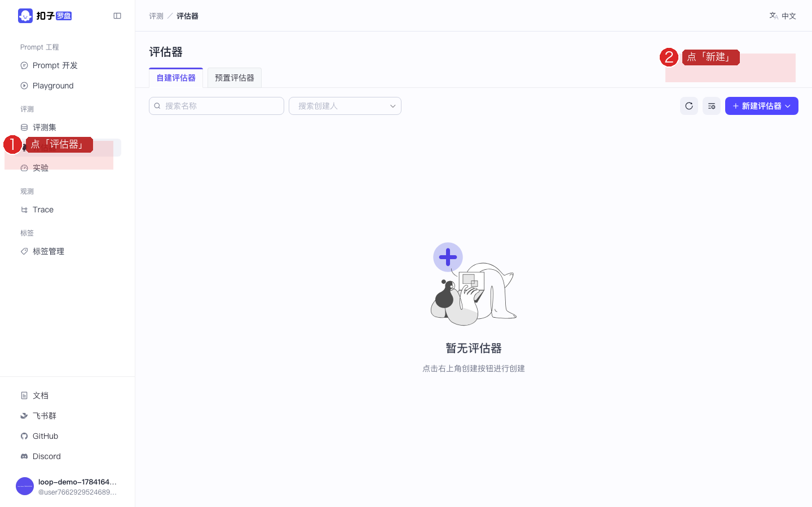
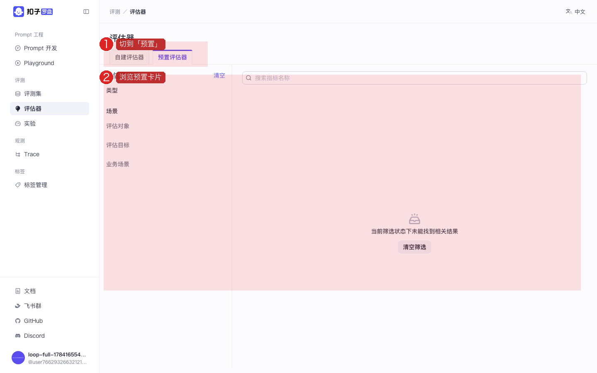
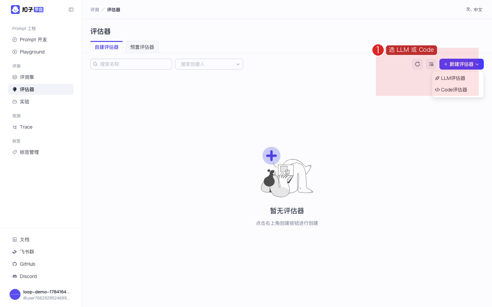
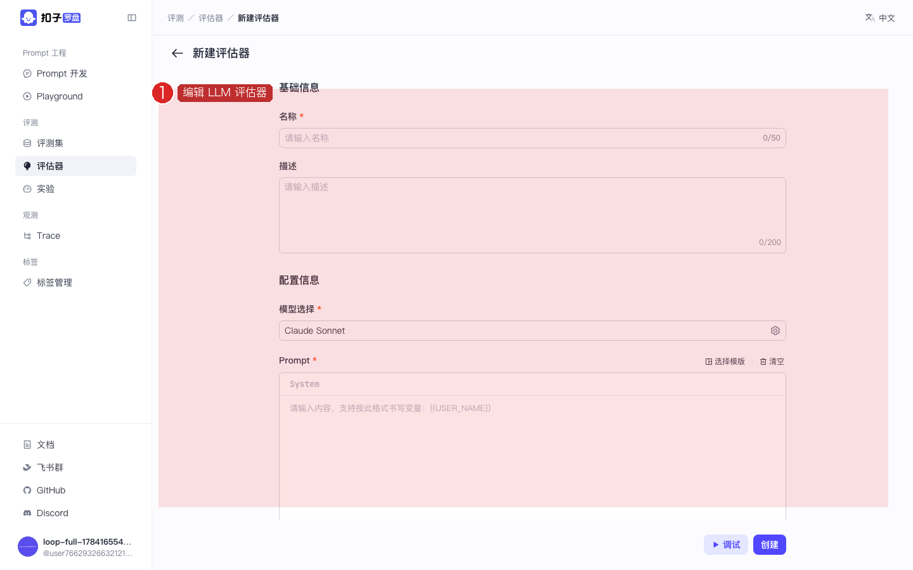
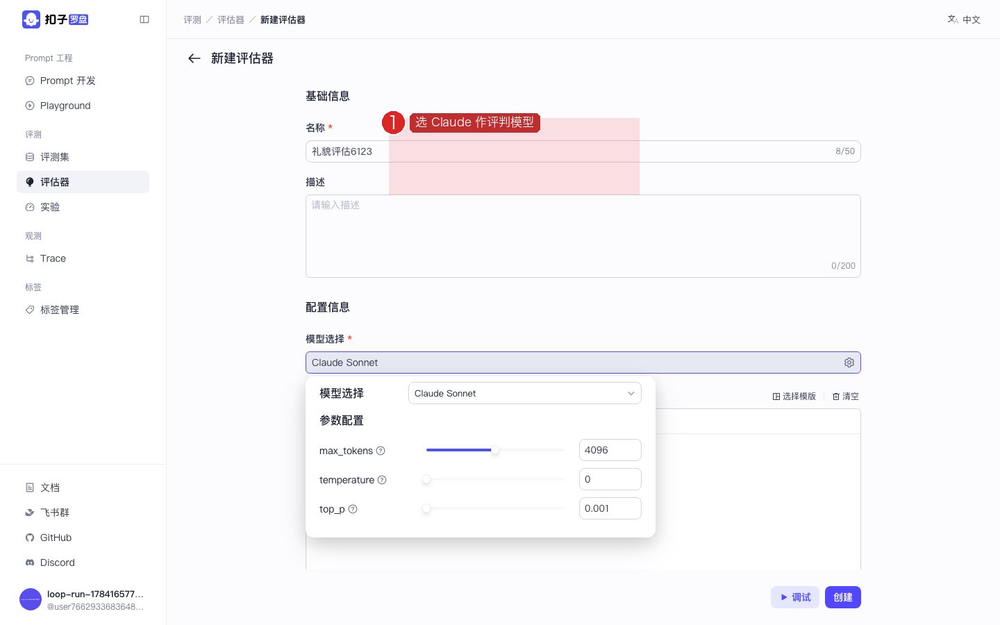
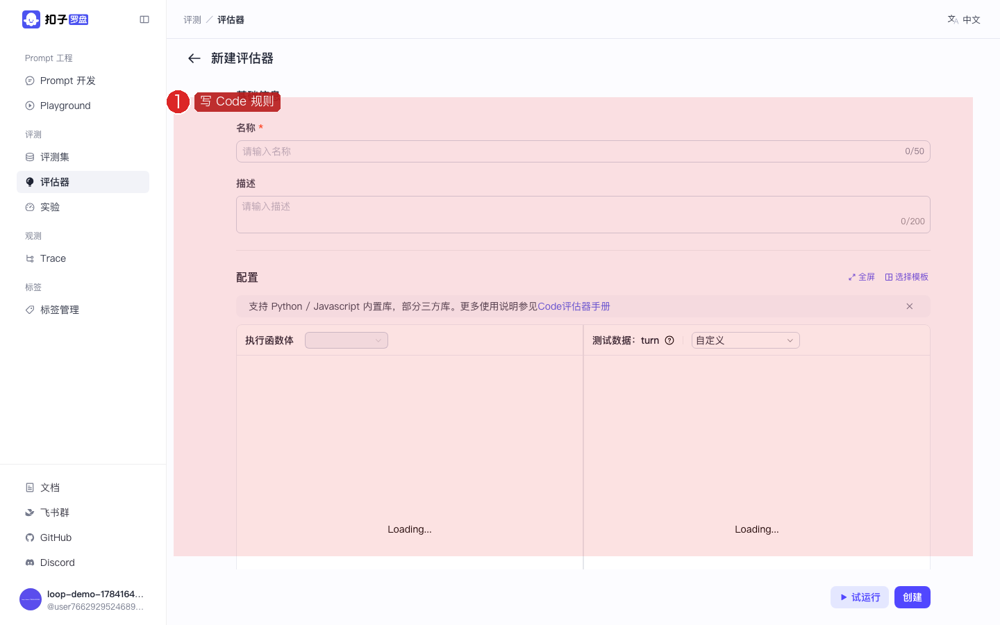

Coze Loop 开源实战 · P03 / 共 8 课 · ≈25 min · 跟做版
P03 · 评估器：预置 · LLM · Code
学会看预置评估器，并创建 LLM / Code 两类自建评估器。 截图红框为操作重点。上级：总目录。
🎯 本课目标（先读再动手）
- 理解评估器 = 自动阅卷老师，知道预置 / 自建的区别。
- 创建（或配置）一个挂上 Claude 的 LLM 评估器。
- 认识 Code 评估器适用场景：规则可复现、不消耗 LLM。
学完怎样算过关：自建列表里有你的评估器（或你能打开预置详情）；能说出 LLM 与 Code 各适合什么题型。
图上红色圆圈数字 1、2、3…表示本步操作顺序，请严格按数字从小到大点。数字旁短文是该步要点。做完看每步绿色验收；先读本课目标再动手。
1
打开评估器列表
目的：进入自动阅卷工具的管理页，分清「自建」和「预置」。
作用：评估器在实验（P04）里给每行输出打分。先找到入口，才谈得上创建 LLM / Code 评估器。
- 侧栏点 评估器
- 顶部通常有页签：自建 / 预置
- 右上角有新建入口

图：按 1→2：侧栏点「评估器」 → 右上角「新建」。先分清自建/预置页签。
✅ 验收：面包屑为「评测 / 评估器」。
2
浏览预置评估器
目的：先看官方模板长什么样，学习「评估维度 / 评判 Prompt」的常见写法。
作用：预置可直接用或复制改造成自建，减少从零写评判规则的成本；也帮你建立「什么叫好的评估器」的直觉。
- 点页签 预置（或「内置」）
- 浏览卡片：常见如准确性、相关性等模板
- 点进某张卡片可查看说明；可复制后改成自建
- 新手建议：先看懂预置长什么样，再回去建自己的

图：按 1→2：切到「预置」 → 浏览卡片学习评估器长什么样。
✅ 验收：你能打开至少一张预置评估器详情。
3
创建 LLM 评估器并挂上 Claude
目的：创建一个「让大模型当裁判」的评估器，用于开放性语义打分（礼貌度、相关性等）。
作用：实验跑完后，LLM 评估器会对每行「模型输出 vs 参考答案」给分或评语。它同样依赖 P00 的 Claude 配置（含 function_call）。
- 回到「自建」页签，点 新建 / 创建
- 选择 LLM（或「大模型评估器」）
- 填写评估器名称，例如
礼貌度评估 - 在模型配置里选择 Claude Sonnet（与 P01 相同来源）
- 按页面提示编写评判 Prompt（说明如何打分、输出格式）
- 保存 / 创建；可再点调试用样例试跑

图：数字 1：新建时选择 LLM 或 Code。

图：数字 1：在 LLM 评估器编辑页填写配置（字段可能略有不同）。

图：数字 1：评判模型选 Claude（yaml 需打开 function_call）。
✅ 验收：自建列表里出现你的评估器；模型下拉不是空的。
评估器调试失败
与 P01 相同：检查 Key、temperature/top_p 冲突、消息是否为空。
4
认识 Code 评估器
目的：了解「用代码写规则」的评估方式，知道它和 LLM 评估器怎么分工。
作用：Code 评估器跑确定性规则（相等、包含、正则），不花 LLM 费用、结果可复现；适合格式/精确匹配。开放性语义题仍优先 LLM。
- 新建 → 选 Code
- 进入代码编辑页，按模板写规则
- 适合：精确匹配、格式检查；不适合：开放性语义打分（那用 LLM）

图：数字 1：在 Code 评估器页写规则（本地 FaaS 执行）。
✅ 验收：你知道 LLM 与 Code 评估器分别适合什么场景。